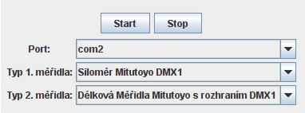

Spuštění měření
Spuštění celého procesu načítání se skládá z následujících kroků:
- Před spuštěním procesu načítání hodnot je nejprve nutno propojit měřidla s
počítačem podle pokynů výrobce měřidla (obecné pravidla lze najít
zde). Pokud je nutno připojit k počítači
dvě měřidla, musí se tyto měřidla připojit k rozhraní DMX2 a toto rozhraní
se pak připojí na sériový port počítače. Poté je tedy nutno vybrat sériový port
počítače, ke kterému je měřidlo připojeno. Sériové porty se označují zkratkou
com a číslem, které může být v rozmezí 1-99. Po prvním spuštění
program nabízí možnost zvolit si jeden ze sériových portů com1 - com4,
které se v počítačích vyskytují nejčastěji. Pokud je měřidlo připojeno k jinak
označenému sériovému portu, je třeba přidat označení tohoto portu v dialogovém
okně
Nastavení.

- Tlačítkem
Start spustíme proces načítání v počítači. Nyní
počítač čeká, až měřidlo zašle data, ty jsou pak analyzována a převedena na
hodnotu, která je zobrazena v tabulce naměřených hodnot.
- Na měřidle je třeba zajistit, aby odeslalo naměřenou hodnotu nebo hodnoty
do počítače. Zde je nutno se řídit pokyny výrobce měřidla. Obecně mohou
měřidla pracovat dvěma způsoby, buď je naměřená hodnota okamžitě zasílána do
počítače, nebo u měřidel s vlastní pamětí jsou dříve naměřené hodnoty zaslány
do počítače najednou.
- Po ukončení měření s měřidlem je třeba proces načítání zastavit
stisknutím tlačítka
Stop.